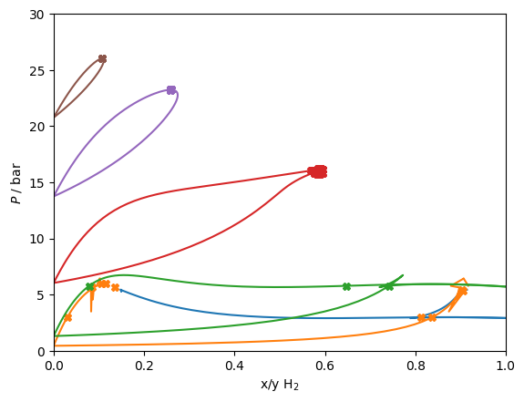

Quantum PR¶
The quantum-corrected Peng-Robinson model of Aasen et al. (https://doi.org/10.1063/1.5111364) can be used to account for quantum effects by empirical fits to the Feynman-Hibbs corrections.
The conventional Peng-Robinson approach is used, with an adjusted covolume \(b_i\) given by
\[b_i = b_{i, PR}\beta_i(T)\]
with
\[\beta_i(T) = \left(\frac{1+A_i/(T+B_i)}{1+A_i/(T_{ci} + B_i)}\right)^3\]
and Twu alpha functions are used to correct the attractive part.
[1]:
import numpy as np, matplotlib.pyplot as plt, pandas
import CoolProp.CoolProp as CP
import teqp
teqp.__version__
[1]:
'0.18.0'
[2]:
kij_library = {
('H2','Ne'): 0.18,
('He','H2'): 0.17
}
lij_library = {
('H2','Ne'): 0.0,
('He','H2'): -0.16
}
def get_model(names, c_factor=0):
param_library = {
'H2': {
"Ls": [156.21],
"Ms": [-0.0062072],
"Ns": [5.047],
"As": [3.0696],
"Bs": [12.682],
"cs / m^3/mol": [c_factor*-3.8139e-6],
"Tcrit / K": [33.19],
"pcrit / Pa": [12.964e5]
},
'Ne': {
"Ls": [0.40453],
"Ms": [0.95861],
"Ns": [0.8396],
"As": [0.4673],
"Bs": [2.4634],
"cs / m^3/mol": [c_factor*-2.4665e-6],
"Tcrit / K": [44.492],
"pcrit / Pa": [26.79e5]
},
'He': {
"Ls": [0.48558],
"Ms": [1.7173],
"Ns": [0.30271],
"As": [1.4912],
"Bs": [3.2634],
"cs / m^3/mol": [c_factor*-3.1791e-6],
"Tcrit / K": [5.1953],
"pcrit / Pa": [2.276e5]
}
}
params = [param_library[name] for name in names]
model = {k: [param[k][0] for param in params] for k in ['Ls','Ms','Ns','As','Bs','cs / m^3/mol','Tcrit / K','pcrit / Pa']}
if len(names) == 1:
model['kmat'] = [[0]]
model['lmat'] = [[0]]
else:
kij = kij_library[names]
model['kmat'] = [[0,kij],[kij,0]]
lij = lij_library[names]
model['lmat'] = [[0,lij],[lij,0]]
j = {
"kind": "QCPRAasen",
"model": model
}
return teqp.make_model(j), j
model = get_model(('H2','Ne'))[0]
modelH2 = get_model(('H2',))[0]
modelNe = get_model(('Ne',))[0]
def get_traces(T, ipures):
traces = []
for ipure in ipures:
rhovecL0 = np.array([0.0, 0.0])
rhovecV0 = np.array([0.0, 0.0])
if ipure == 1:
rhoL, rhoV = modelNe.superanc_rhoLV(T)
else:
rhoL, rhoV = modelH2.superanc_rhoLV(T)
rhovecL0[ipure] = rhoL
rhovecV0[ipure] = rhoV
opt = teqp.TVLEOptions();
# opt.polish=True;
# opt.integration_order=5; opt.rel_err=1e-10;
# opt.calc_criticality = True;
opt.crit_termination=1e-10
trace = model.trace_VLE_isotherm_binary(T, rhovecL0, rhovecV0, opt)
traces.append(trace)
return traces
for T in [24.59, 28.0, 34.66, 39.57, 42.50]:
if T < 26.0:
traces = get_traces(T, [0, 1])
else:
traces = get_traces(T, [1])
for trace in traces:
df = pandas.DataFrame(trace)
# Plot the VLE solution
line, = plt.plot(df['xL_0 / mole frac.'], df['pL / Pa']/1e5)
plt.plot(df['xV_0 / mole frac.'], df['pL / Pa']/1e5, color=line.get_color())
# Plot the VLLE solution if found
for soln in model.find_VLLE_T_binary(traces):
for rhovec in soln['polished']:
rhovec = np.array(rhovec)
rhotot = sum(rhovec)
x = rhovec/rhotot
p = rhotot*model.get_R(x)*T*(1+model.get_Ar01(T, rhotot, x))
plt.plot(x[0], p/1e5, 'X', color=line.get_color())
# print(T, rhovec, x[0], p/1e5, 'bar')
plt.gca().set(xlabel='x/y H$_2$', ylabel='$P$ / bar', xlim=(0,1), ylim=(0,30));
